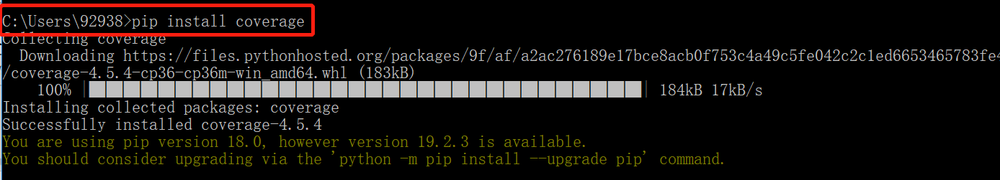
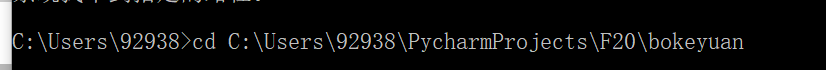
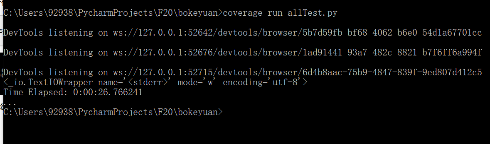
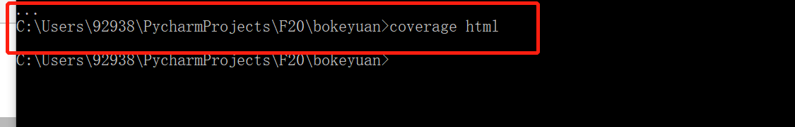
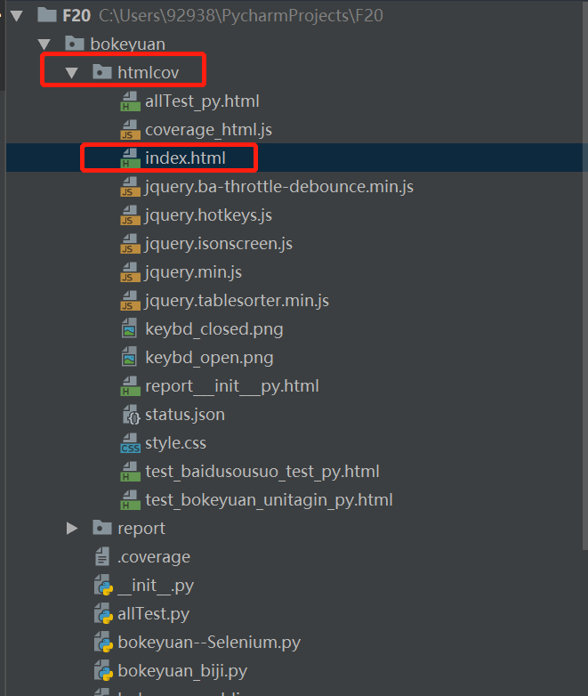
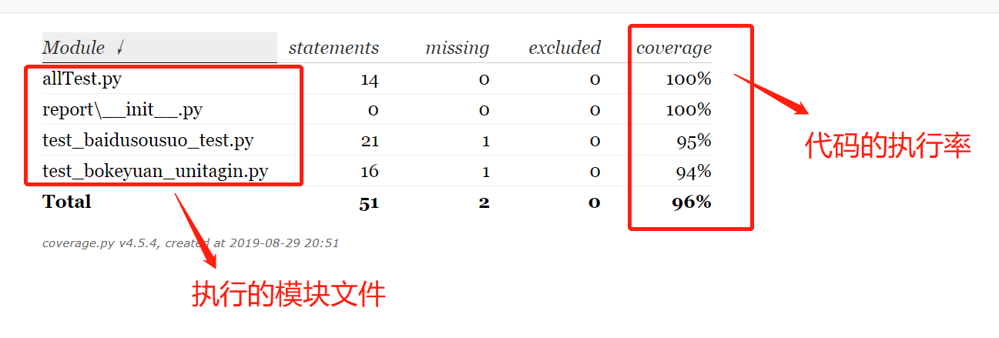
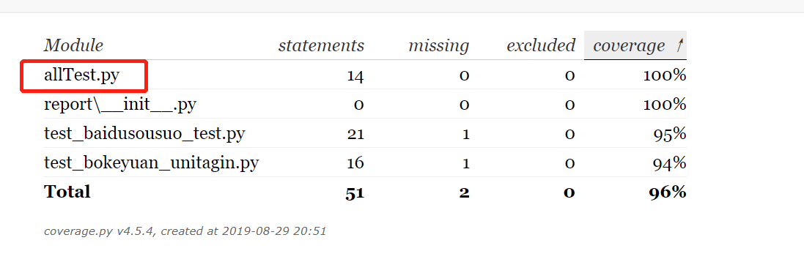
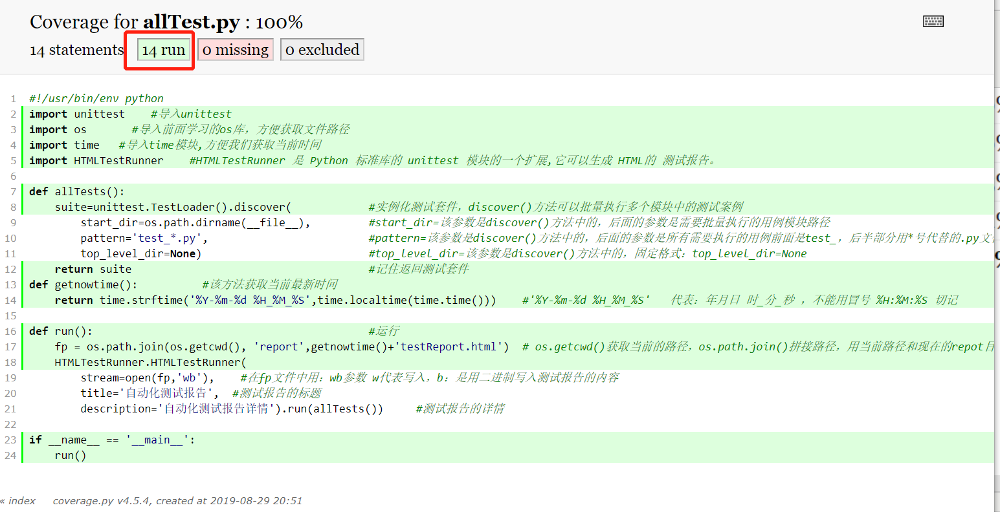
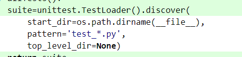

我们看下代码覆盖率的统计~，这个不必太揪心，觉得可以帮助你优化代码，可以看看，也不要带在意~
1、先在cmd命令窗口在线安装coverage
1 pip install coverage
2、安装完毕后我们在cmd命令窗口输入：命令 ----- 从当前目录切换到代码模块.py文件的所在目录
cd C:\Users\92938\PycharmProjects\F20\bokeyuan
3、开始使用coverage统计代码的覆盖率，在cmd输入 allTest.py是我的文件，你需要输入你自己的python模块文件名字，然后按下回车
1 coverage run allTest.py
4、按下回车后，代码开始统计运行：统计后的样子~

5、不要慌，在cmd窗口继续输入命令： 注意空格，然后在按回车键~
1 coverage html
6、打开Pycharm集成环境，找到目录下面的 htmlcov包下面的index.html文件用浏览器打开~~~

我们看看浏览器里打开的代码统计~

点击执行的模块文件，可以进入看到该模块的执行率的详情信息

进入后，点击run按钮，绿色会覆盖代码，代表执行的代码有哪些， missing按钮点击后，代码会被红色覆盖，可以看到没有被执行的代码有哪些~

这里的代码没有被绿色覆盖，不是百分百的覆盖率吗？其实是执行了的，因为没有覆盖颜色的部分是discover的参数，discover()方法执行了，参数肯定被执行喽~~

今天的东西就这么多~~~如果还有不理解的朋友可以留言哦~~~来自新手路上的小白